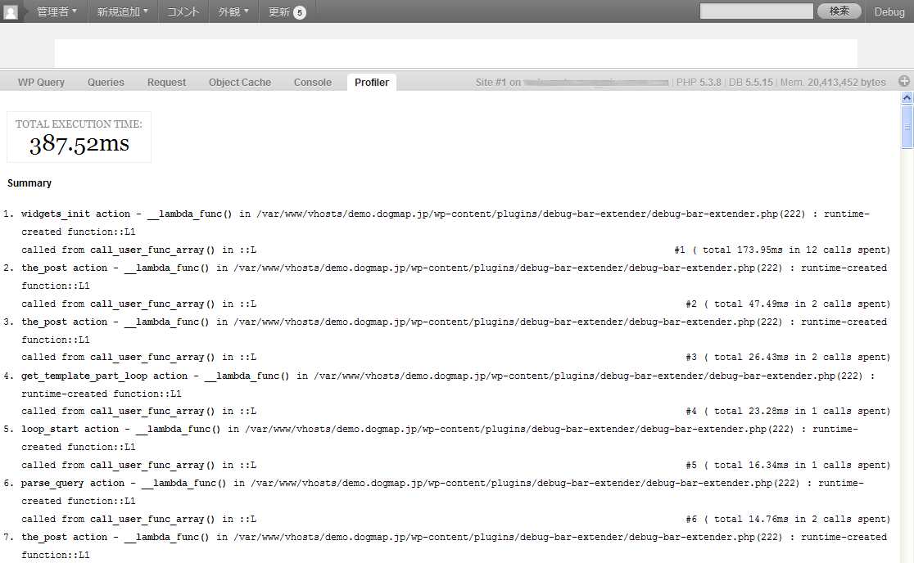
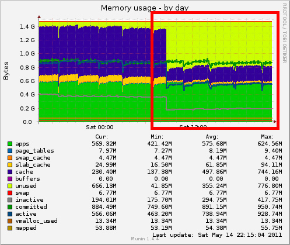
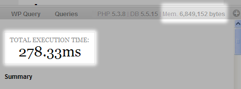
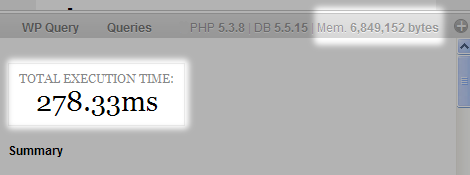
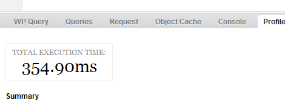

ハイパフォーマンス WordPress サイト入門
WordCamp KOBE 2011 - wokamoto
※カーソルキー左右でページめくりできます
自己紹介 (wokamoto)
 WordPress Plugins/JSeries プロジェクトの一員で、主に WordPress のプラグインをつくっています。
WordPress Plugins/JSeries プロジェクトの一員で、主に WordPress のプラグインをつくっています。
- Head Cleaner - <head> 部分のお掃除をするプラグイン
- OAuth Provider - WordPress を OAuth プロバイダにするためのプラグイン
- Google Maps Anywhere - Google Map 挿入用プラグイン
- ...etc
この春から「め組」ことデジタルキューブさんと、一緒に仕事をやらせてもらってます。
め組さんとの仕事では、主に既存 WordPress サイトの高速化とかやってます。
自己紹介 (wokamoto)
最近では、「め組」のたいさんと一緒に Nginx 公式サイトの日本語化にも貢献したりしました。
http://nginx.org/ja/
http://nginx.org/ja/docs/

セッション概要
タイムテーブルには、上級者向けって書いてたのに「入門」なんてつけちゃって申し訳ない。
上級者には、やや物足りない内容になるかもですが、ご容赦を。
今回は、バックエンド(サーバサイド)の高速化についての話をメインにします。
フロントエンド(クライアントサイド)の高速化については、プラグインや手法をちらっと紹介するにとどめます。
高速化に王道なし
Debug Bar と Debug Bar Extendar
まずは、現状分析してボトルネックを探りましょう。
現状分析には Debug Bar と Debug Bar Extendar プラグインが便利です。
インストールしたら wp-config.php に以下の3行を追加します。
define('SAVEQUERIES', true);
define('WP_DEBUG', true);
define('WP_DEBUG_DISPLAY', false);
Debug Bar と Debug Bar Extendar は、あくまでも WordPress の Debug をするためのプラグインです。
実稼動しているサイトでは、常時有効にしておく必要はありません。
分析が終わったら、無効にしておくことをオススメします。
ボトルネックを探る
WordPress が遅くなる原因はおおまかにわけて以下の2つです。
- PHP の処理が遅い
- MySQL の処理が遅い
ただし、これらが発生する原因は種々様々です。
ボトルネックを探る
ただし、これらが発生する原因は種々様々です。
- PHP の処理が遅い
- プラグインを詰め込みすぎてて、そもそも処理自体が重くなってる
- アクセスが多くて、処理が追いついてない
- MySQL の処理が遅い
- プラグインを詰め込みすぎてて、そもそも発行される SQL クエリーが多い
- 発行している SQL クエリーが適切にチューニングされておらず時間がかかる
- MySQL サーバと Web サーバが別立てになっていて、その間のネットワーク速度が遅い
- MySQL サーバが適切にチューニングされておらず、パフォーマンスを出せていない
プラグインを詰め込みすぎてる
簡単に WordPress に機能を追加できるプラグイン便利です。
でも、これを入れすぎると処理が全体的に重くなります。
どのプラグインがボトルネックになっているかを探るには Debug Bar と Debug Bar Extendar が便利です。
これを導入して管理バーに表示されるメニュー「Debug」を見ることで、ある程度特定できます。

Debug Bar の Queries タブ
Queries タブでは WordPress 実行時に発行されたすべての SQL クエリーと、その実行時間が表示されます。

Debug Bar の Profiler タブ
Profiler タブでは、設定されたチェックポイントごとに実行時間を計測してくれます。
Debug Bar の Profiler タブ
テーマテンプレートに以下のようなコードを挿入することで、チェックポイントを独自に追加することもできます。
<?php
if (class_exists('Debug_Bar_Extender')
Debug_Bar_Extender::instance()->checkpoint('loop start');
?>これで、ボトルネックになっている処理を特定することができます。
そもそもアクセス数が多い
アクセス数が多いのは嬉しいことですが、非力なサーバに大量にアクセスされると、処理が追いつかなくなります。
WordPress も版を重ねるに連れて、徐々にリソースを大量に要求するアプリケーションになってきました。
メモリ不足でスワップ領域使い出したとか言うと目も当てられないことになります。

WordPress を極力動かさない
意外と落とし穴なのが、存在しないファイルへのアクセスで PHP プロセスが実行してしまう所。
WordPress をインストールし、カスタムパーマリンクを有効にすると、こんな .htaccess が設定されると思います。
# BEGIN WordPress
<IfModule mod_rewrite.c>
RewriteEngine On
RewriteBase /
RewriteCond %{REQUEST_FILENAME} !-f
RewriteCond %{REQUEST_FILENAME} !-d
RewriteRule . /index.php [L]
</IfModule>
# END WordPressこれは、リクエストされたファイルが存在しない場合に WordPress を起動させるための設定です。
WordPress を極力動かさない
存在しないファイルへのアクセスが有った場合には、必ず WordPress が呼び出されているのです。
例えば、以下のファイルなんかは、ブラウザやクローラからファイルの有無を確認されることが多いです。
- /favicon.ico
- /apple-touch-icon.png
- /robots.txt
- /crossdomain.xml
これらは、あらかじめ用意しておいたほうが良いですね。
WordPress を極力動かさない
.htaccess を以下のように修正すれば、Web サーバレベルで「404 Not Found」を返し、WordPress が呼び出されません。
# BEGIN WordPress
<IfModule mod_rewrite.c>
RewriteEngine On
RewriteBase /
RewriteCond %{REQUEST_FILENAME}
!\.(html?|xml|txt|xsl|js|css|jpe?g|png|gif|ico)$
RewriteCond %{REQUEST_FILENAME} !-f
RewriteCond %{REQUEST_FILENAME} !-d
RewriteRule . /index.php [L]
</IfModule>
# END WordPressこれは、リクエストされたファイルの拡張子で静的ファイルか判断し、静的ファイルへのリクエストの場合は WordPress を起動させないための設定です。
WordPress を極力動かさない
WordPress をマルチサイト版で利用している場合、子サイトの静的ファイルへのアクセスでも PHP プロセスが起動しています。
マルチサイト版の子サイトでは、画像の URL が以下のような感じになりますが
http://hoge.example.com/files/2011/05/fuga.jpg
実際にはサーバ上には /files/2011/05/fuga.jpg ってファイルは存在してません。
WordPress が、どうやってこのファイルを処理しているかというと…
- mod_rewrite で files/ を wp-includes/ms-files.php に置換
RewriteRule ^files/(.+) wp-includes/ms-files.php?file=$1 [L] - wp-includes/ms-files.php で
/wp-content/blogs.dir/{blog ID}/files/2011/05/fuga.jpg を読んで出力
WordPress を極力動かさない
.htaccess で、以下のように設定してやれば wp-includes/ms-files.php を経由しないで、直接 Web サーバに応答させることができます。
Web サーバとして Apache を採用していて、子サイトのサイト名が hoge.example.com で、ブログIDが2の場合。
RewriteEngine On
RewriteCond %{HTTP_HOST} ^hoge\.example\.com$
RewriteRule ^(/files/.+) %{HTTP_HOST}$1 [C]
RewriteRule ^hoge\.example\.com(/files/.*)
/wp-content/blogs.dir/2$1 [L]ただし、子サイトを追加したりした場合は、都度 .htaccess を手で修正してやらなければならないので注意が必要です。
静的ファイルに有効期限を設けよう
HTTP ヘッダの expires をセットし、静的ファイルに適切な有効期限を設けることで、クライアントのブラウザにキャッシュを保持してもらって Web サーバへのアクセスを減らせるかもしれません。
Apache の .htaccess に書くなら、こんな感じ。
<IfModule mod_expires.c>
ExpiresActive On
ExpiresDefault "access plus 1 seconds"
ExpiresByType text/html "access plus 1 seconds"
ExpiresByType image/gif "access plus 2592000 seconds"
ExpiresByType image/jpeg "access plus 2592000 seconds"
ExpiresByType image/png "access plus 2592000 seconds"
ExpiresByType image/x-icon "access plus 2592000 seconds"
ExpiresByType text/css "access plus 604800 seconds"
ExpiresByType text/javascript "access plus 604800 seconds"
ExpiresByType application/x-javascript "access plus 604800 seconds"
</IfModule>これで画像は30日、css・js などは7日間、ブラウザにキャッシュされます。
.htaccess は、極力使わない
さて、今まで .htaccess に書こうと言ってきましたが、そもそも .htaccess の処理自体、かなり重い処理です。
深い階層のサブディレクトリ内を見られたとき Apache は、全ての親ディレクトリをたどって継承元となる .htaccess が無いか確認し、あればマージします。
もし、Apache を使用していて httpd.conf が修正できる場合は、これらの設定はすべて httpd.conf で行い .htaccess は使用しないようにした方が賢明です。
Apache 以外の Web サーバを試してみる
Nginx の情報は、どこで手に入る？
Nginx は、設定ファイルの記述方法もわかり易いので、オススメです。
公式サイトの文書も、先日「め組」のたいさんと私が日本語訳しました。
Nginx + fastcgi で構成しても良いですし、Nginx をリバースプロキシとして動作させ、静的ファイルへのリクエストは Nginx で捌きつつ、バックグラウンドで Apache + mod_php をアプリケーションサーバとして動作させても良いです。
実際 wordbench.org のサーバは、この構成で動作しています。

それでも負荷が高い場合
サーバを多重化させてスケールアウトさせることも視野に入れてみましょう。
Nginx なら、わりと簡単にスケールアウトさせることができます。
例えば、バックエンドのアプリケーションサーバ(192.168.0.2:8000) を追加した場合、こんな感じです。
http {
：
upstream backend {
ip_hash;
server 127.0.0.1:8000;
server 192.168.0.2:8000;
}
server {
listen 80;
server_name _;
root /var/www/html;
index index.php index.html index.htm;
location ~ .*\.php { proxy_pass http://backend; }
location ~ /\.ht { deny all; }
location ~ .*\.(txt|xml|html?|js|css|gz|ico|jpe?g|gif|png|wmv|flv|swf|mpg) {
access_log off;
expires 30d;
break;
}
location / { proxy_pass http://backend; }
}
：
}サーバを多重化させた場合の WordPress のコアソースや、プラグインの同期は？
WordPress がインストールされているディレクトリ内のファイルの同期には lsyncd 辺りを使えば良いでしょう。
lsyncd は linux kernel 2.6.13 で導入された iNotify という API を使って動作しています。
この API を使うと、ファイルの作成や削除などをそれぞれイベントとして取得することができます。
lsyncd では、この API と rsync を組み合わせてリアルタイムなファイル同期を実現しています。
詳細な設定方法は、僕とこのブログで解説してます。
PHP の処理速度をあげる
PHP は、実行するたびにソースから中間コードを生成しています。
eAccelerator や APC は、この中間コードをキャッシュして PHP の処理速度自体を高速化してくれます。
インストール方法とかは、そこら中に情報転がってると思うので割愛。
動作しているか確認するには php -i で確認しましょう。
eAccelerator の場合は
$ php -i | grep eAccelerator
with eAccelerator v0.9.6.1, Copyright (c) 2004-2010 eAccelerator, by eAccelerator
eAccelerator
eAccelerator support => enabledAPC の場合は
$ php -i | grep apc
apc
apc.cache_by_default => On => On
apc.canonicalize => On => On
apc.coredump_unmap => Off => Off
apc.enable_cli => Off => Off
apc.enabled => On => On
apc.file_md5 => Off => Off
apc.file_update_protection => 2 => 2
apc.filters => no value => no value
apc.gc_ttl => 3600 => 3600
apc.include_once_override => Off => Off
apc.lazy_classes => Off => Off
apc.lazy_functions => Off => Off
apc.max_file_size => 1M => 1M
apc.mmap_file_mask => no value => no value
apc.num_files_hint => 1000 => 1000
apc.preload_path => no value => no value
apc.report_autofilter => Off => Off
apc.rfc1867 => Off => Off
apc.rfc1867_freq => 0 => 0
apc.rfc1867_name => APC_UPLOAD_PROGRESS => APC_UPLOAD_PROGRESS
apc.rfc1867_prefix => upload_ => upload_
apc.rfc1867_ttl => 3600 => 3600
apc.shm_segments => 1 => 1
apc.shm_size => 32M => 32M
apc.slam_defense => On => On
apc.stat => On => On
apc.stat_ctime => Off => Off
apc.ttl => 0 => 0
apc.use_request_time => On => On
apc.user_entries_hint => 4096 => 4096
apc.user_ttl => 0 => 0
apc.write_lock => On => On さらに速度が必要？
さらに速度が必要な場合は、中間コード生成元の PHP ファイルが変更されたかどうかのチェックを止めさせましょう。
eAccelerator の場合、php.ini に以下を追加
eaccelerator.check_mtime='0'APC の場合、php.ini に以下を追加
apc.stat=FALSEただし、これやると WordPress でテーマファイル修正したとか、WordPress 本体とかプラグインとかアップデートしたときに中間コードのキャッシュを自動で再作成してくれません。
そんな時は、手動でキャッシュを消すことを忘れずに。
さて、結果は？
Debug Bar で、見てみましょう。一目瞭然ですね。
 

Object Cache
WordPress には object cache という仕組みがあります。
WordPress のパフォーマンスチューニングで、以下のような手法が紹介されることが多いと思います。
<?php bloginfo('stylesheet_url') ?>上のようなテンプレートタグは MySQL サーバにアクセスして遅くなるので、直接書いておけ。
http://example.jp/wp-content/themes/example/style.cssこれ、実は効果ありません。
WordPress では options テーブル上で autoload に設定されているデータについては、初期の段階ですべて読み込んで object cache します。
なので、bloginfo() を呼び出していようが居まいが、必ず MySQL サーバへのアクセスは発生してます。
また、bloginfo() を何回呼び出しても object cache からデータを取得するので、処理速度的にはまったく関係ありません。
Object Cache されたデータを保存する
この object cache ですが、せっかく取得してきたデータは WordPress のプロセスが終了すると破棄されてしまいます。
このデータを memcached などにキャッシュさせておくプラグイン(正確にはドロップイン)もあります。
これらを導入することで、object cache されたデータを使いまわすことができます。
Memcached Object Cache
で、こいつの効果はと言うと...
クエリー数が劇的に減少してますね

処理速度も、多少の改善が見られます

Memcached Object Cache
ちなみに memcached サーバを別立てで用意している場合は wp-config.php に以下の記述を追加すればOK
global $memcached_servers;
$memcached_servers = array('192.168.0.2:11211');
※別サーバが 192.168.0.2 で memcached のポートが 11211 の場合
複数サーバを指定することもできます。
PHP の実行結果をキャッシュ
そもそも、毎回 PHP で動的にページを組み立ててるから、処理に時間がかかるんじゃねーの？ってことで開発されたプラグインが有名なアレらです。
これらは、あまりにも有名なので説明は省きます。
リバースプロキシを使えば、これらのプラグインを使わなくても WordPress の処理結果をキャッシュしておくことが簡単にできます。
リバースプロキシで、PHP の実行結果をキャッシュ
ここでは Nginx をリバースプロキシとして使用し WordPress の実行結果をキャッシュさせてみましょう。
もちろん Vanish とか、他のプロジェクトを使っても良いです。
nginx.conf にこんな感じで記述します。
http {
:
proxy_cache_path /var/cache/nginx levels=1:2 keys_zone=czone:32m max_size=256m inactive=120m;
proxy_temp_path /var/tmp/nginx;
proxy_cache_key "$scheme://$host$request_uri$is_args$args";
proxy_set_header Host $host;
proxy_set_header X-Real-IP $remote_addr;
proxy_set_header Remote-Addr $remote_addr;
proxy_set_header X-Forwarded-Host $host;
proxy_set_header X-Forwarded-Server $host;
proxy_set_header X-Forwarded-For $proxy_add_x_forwarded_for;
client_max_body_size 50m;
client_body_buffer_size 256k;
proxy_connect_timeout 30;
proxy_send_timeout 30;
proxy_read_timeout 60;
:リバースプロキシで、PHP の実行結果をキャッシュ
server {
:
location / {
if ($http_cookie ~* "comment_author_[^=]*=([^%]+)%7C|wordpress_logged_in_[^=]*=([^%]+)%7C") {
set $do_not_cache 1;
}
proxy_no_cache $do_not_cache;
proxy_cache_bypass $do_not_cache;
proxy_redirect off;
proxy_cache czone;
proxy_cache_key "$scheme://$host$request_uri$is_args$args";
proxy_cache_valid 200 10m;
proxy_cache_valid 404 5m;
proxy_pass http://backend;
}
}リバースプロキシで、PHP の実行結果をキャッシュ
WP Super Cache と Ktai Style を併用する場合、ケータイからのアクセスがあった時は WP Super Cache が動作しないようにしていると思います。
ケータイからのアクセスが有る程度多いサイトだと、これではもったいないですね。
Nginx のプロキシキャッシュでは、ユーザーエージェントごとにキャッシュを生成することもできます。
こんな感じですね。
if ($http_user_agent ~* '(DoCoMo|J-PHONE|Vodafone|MOT-|UP\.Browser|DDIPOCKET|ASTEL|PDXGW|Palmscape|Xiino|sharp pda browser|Windows CE|L-mode|WILLCOM|SoftBank|Semulator|Vemulator|J-EMULATOR|emobile|mixi-mobile-converter)') {
set $mobile 1;
}
if ($http_user_agent ~* '(iPhone|iPod|Opera Mini|Android.*Mobile|NetFront|PSP|BlackBerry|Windows Phone)') {
set $mobile 2;
}
:
proxy_cache_key "$scheme://$host$request_uri$is_args$args$mobile";そもそも発行される SQL クエリーが多い
Debug Bar の Queries タブで確認
総発行クエリー数は Debug Bar の Queries タブで確認できます。
プラグインで解決できる場合もあります。
DB Cache Reloaded Fix
DB Cache Reloaded Fix は SQL クエリーの結果をディスクにキャッシュしてくれるプラグインです。
日本語リソースは僕が作ったんで、もしおかしな訳を見つけたら、こっそり教えてください。

DB Cache Reloaded Fix
このプラグインは MySQL に対して発行された SQL クエリーの処理結果をディスク上にキャッシュしておいて MySQL サーバに対するクエリー発行を軽減してくれます。
ただし MySQL サーバ自体が適切にチューニングされていて、キャッシュから取ってくるより MySQL サーバから直接取ってくるほうが速い場合もあります。 この辺は、良く見極めて使いましょう。
クエリー数は減ったけど

処理時間は増えた

MySQL サーバのチューニング
MySQL サーバの現状を知るには MySQLTuner を使用すると便利です。
これは稼働中の MySQL の設定情報やログ情報からセキュリティ、パフォーマンスに関する診断結果と推奨情報を提供してくれる perl スクリプトです。
MySQLTuner をダウンロードしましょう。
$ wget mysqltuner.pl
余談ですが、これ面白いすよね。
http://mysqltuner.pl/ を http://mysqltuner.pl/mysqltuner.pl に302リダイレクトすることによって
「wget mysqltuner.pl」だけで mysqltuner.pl をダウンロードできるようにしてる。
MySQL サーバのチューニング
実行して診断してみましょう。
$ perl mysqltuner.pl
>> MySQLTuner 1.2.0 - Major Hayden
>> Bug reports, feature requests, and downloads at http://mysqltuner.com/
>> Run with '--help' for additional options and output filtering
Please enter your MySQL administrative login: xxxxxx
Please enter your MySQL administrative password:
-------- General Statistics --------------------------------------------------
[--] Skipped version check for MySQLTuner script
[OK] Currently running supported MySQL version 5.5.15-log
[OK] Operating on 32-bit architecture with less than 2GB RAM
:
:
-------- Recommendations -----------------------------------------------------
General recommendations:
Run OPTIMIZE TABLE to defragment tables for better performance
MySQL started within last 24 hours - recommendations may be inaccurate
When making adjustments, make tmp_table_size/max_heap_table_size equal
Reduce your SELECT DISTINCT queries without LIMIT clauses
Variables to adjust:
tmp_table_size (> 48M)
max_heap_table_size (> 48M)
クライアントサイドのチューニング
Expiresヘッダーを追加しよう!
サーバサイドのチューニングの時にも紹介しましたが、Apache なら mod_expires を使いましょう。
Nginx なら、expires xxd って書いてあげるだけでよいです。
http {
：
server {
listen 80;
server_name _;
root /var/www/html;
# static files
location ~ .*\.(txt|xml|html?|jpe?g|JPE?G|gif|GIF|png|PNG|swf|SWF|wmv|WMV|flv|FLV|css|CSS|js|JS|inc|ico|gz) {
index index.html index.htm;
expires 14d;
break;
}
：
}
：
}コンポーネントを圧縮しよう!
Apache なら mod_deflate を使いましょう。
<IfModule mod_deflate.c>
SetOutputFilter DEFLATE
BrowserMatch ^Mozilla/4 gzip-only-text/html
BrowserMatch ^Mozilla/4\.0[678] no-gzip
BrowserMatch \bMSI[E] !no-gzip !gzip-only-text/html
SetEnvIfNoCase Request_URI \.(?:gif|jpe?g|png|ico)$ no-gzip dont-vary
SetEnvIfNoCase Request_URI _\.utxt$ no-gzip
#DeflateCompressionLevel 4
AddOutputFilterByType DEFLATE text/plain
AddOutputFilterByType DEFLATE text/html
AddOutputFilterByType DEFLATE text/xml
AddOutputFilterByType DEFLATE text/css
AddOutputFilterByType DEFLATE application/xhtml+xml
AddOutputFilterByType DEFLATE application/xml
AddOutputFilterByType DEFLATE application/rss+xml
AddOutputFilterByType DEFLATE application/atom_xml
AddOutputFilterByType DEFLATE application/x-javascript
AddOutputFilterByType DEFLATE application/x-httpd-php
</IfModule>コンポーネントを圧縮しよう!
Nginx なら、こんな感じ。
http {
：
gzip on;
gzip_http_version 1.0;
gzip_vary on;
gzip_comp_level 6;
gzip_types text/html text/xml text/css application/xhtml+xml application/xml application/rss+xml application/atom_xml application/x-javascript application/x-httpd-php;
gzip_disable "MSIE [1-6]\.";
：
}コードのサイズを圧縮する!
僕の作ったプラグイン Head Cleaner が役に立つかもしれません。
また、以下のサイトでは、JavaScript を Minify してくれます。
こういったツールを使用して JavaScript や、css をコンパクトにしましょう。
ただ gzip 圧縮転送している場合は、これらで小さくしてもそんなにサイズ変わらなかったりするんですけどね...
スクリプトの重複に気をつける!
行儀の悪いプラグインやテーマを使っていると jQuery を複数読み込まれてしまうことがあります。
WordPress には jQuery などの JavaScript ライブラリを複数読み込まないようにする仕組みがあります。
それが wp_enqueue_script() です。
jQuery を使用しているプラグインがある場合、テーマに直接
<script type='text/javascript' src='http://example.com/js/jquery.js'>
</script>とかって書いておくと、jQuery が複数呼び出される場合があります。
スクリプトの重複に気をつける!
そういうときは、テーマテンプレートの header.php の冒頭に
<?php wp_enqueue_script('jquery'); ?>と書いておくだけで良いです。
ただし、古いプラグインや行儀の悪いプラグインが、直接 head 部にスクリプトを書き出しているかもしれません。
これは修正してあげましょう。
CDN を使おう!
CDN を使って静的ファイルを配信するには、以下のプラグインが役に立つかもしれません。
これを使うことによって、静的ファイルを Amazon の CloudFront から配信することができます。
また、手っ取り早く jQuery だけ Google AJAX Libraries のモノを使わせることもできます。
テーマテンプレートの header.php の冒頭に、以下のように書いておきましょう。
<?php
wp_deregister_script('jquery');
wp_enqueue_script(
'jquery',
'http://ajax.googleapis.com/ajax/libs/jquery/1.6.1/jquery.min.js',
array(),
'1.6.1');
?>ご清聴ありがとうございました
wokamoto ( OKAMOTO Wataru )
blog: http://dogmap.jp/
twitter: http://twitter.com/wokamoto
facebook: http://www.facebook.com/dogmap.jp
今回のプレゼン資料は、下記URLで公開しています。
http://dogmap.jp/wckobe2011/